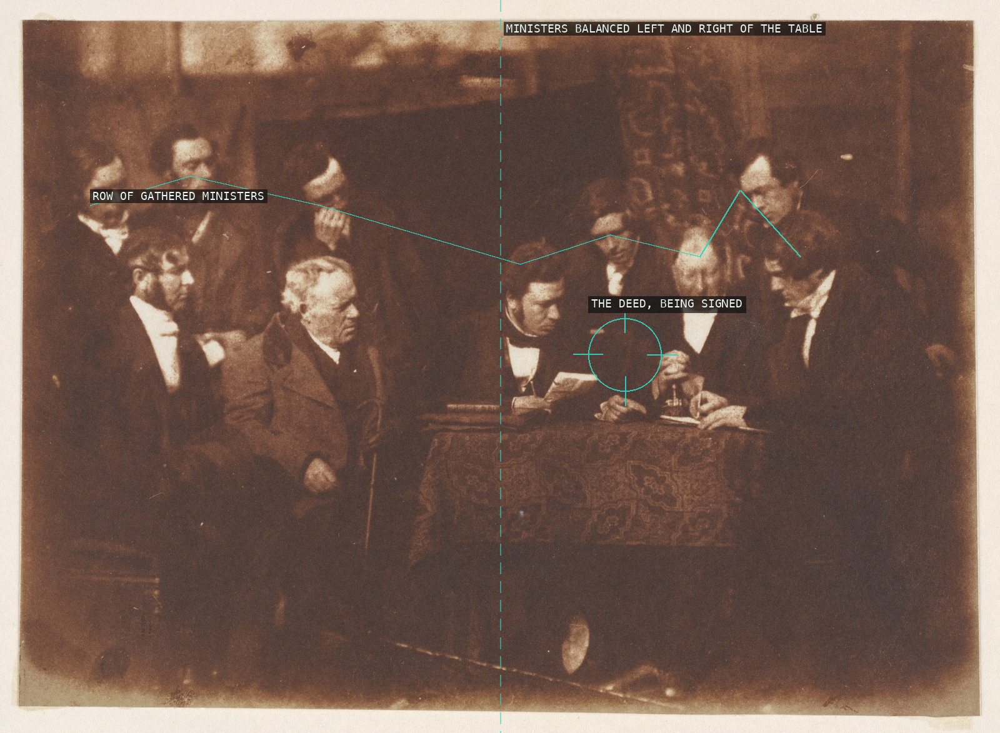
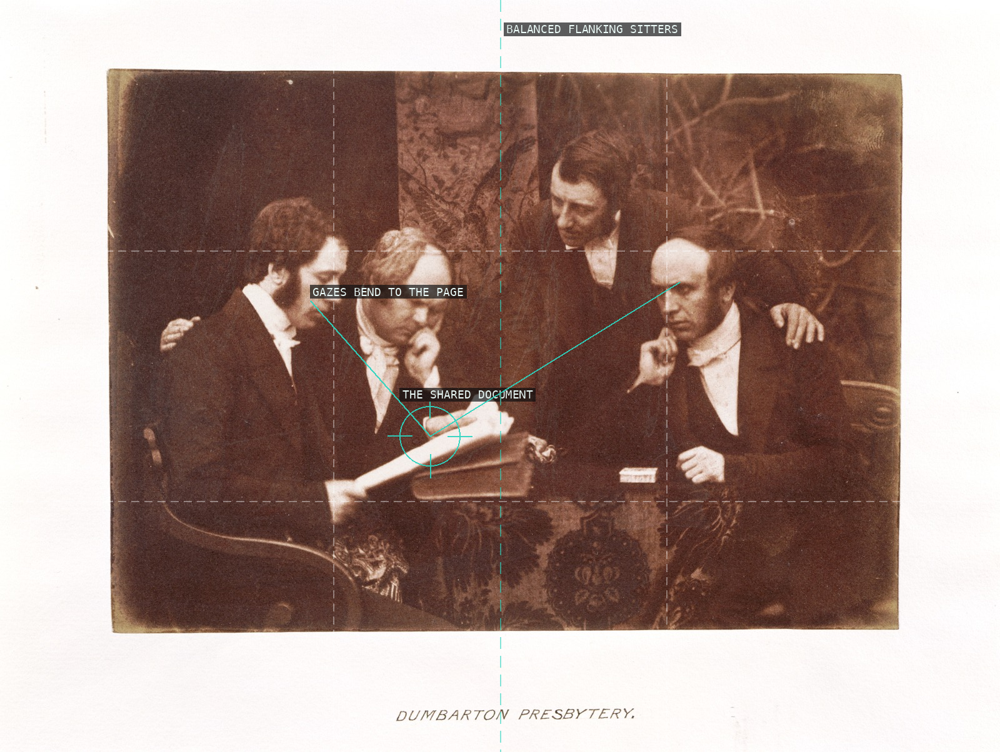
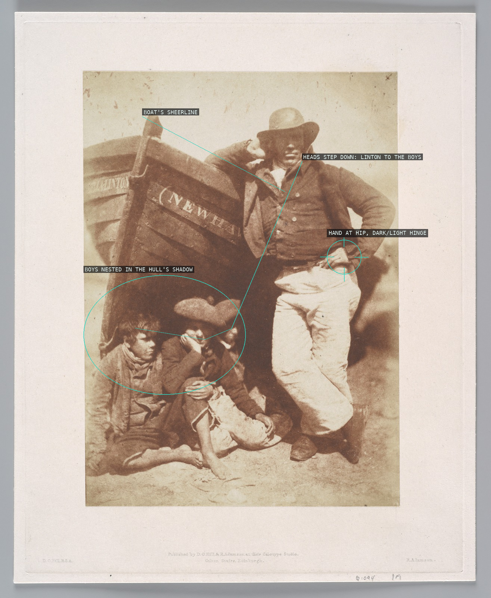
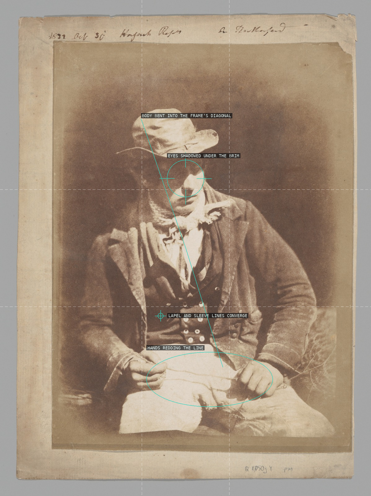
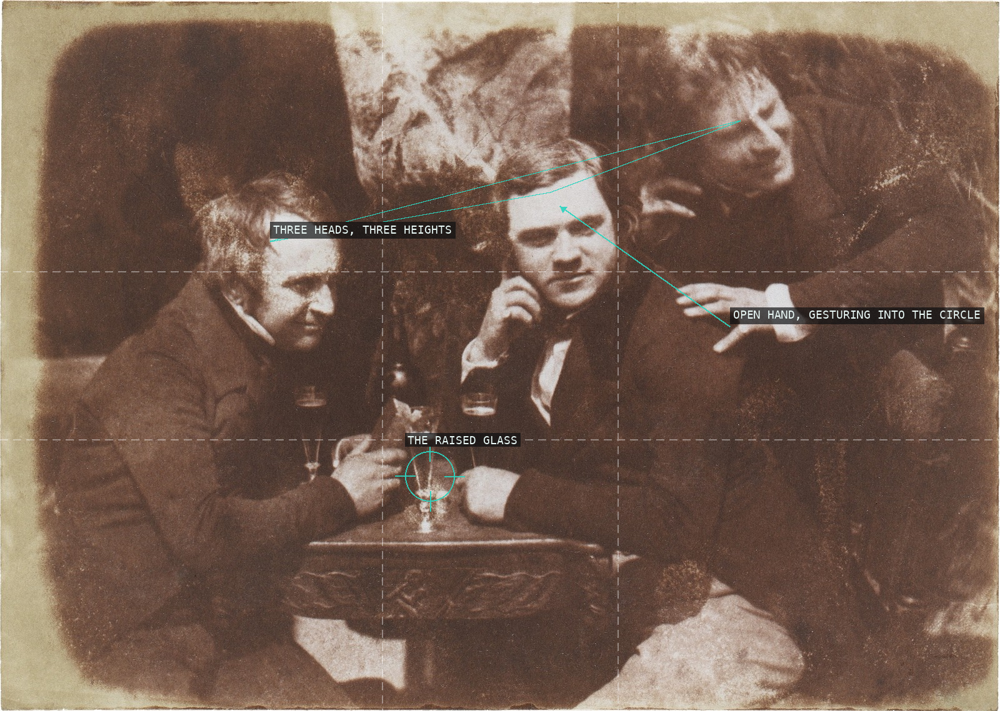
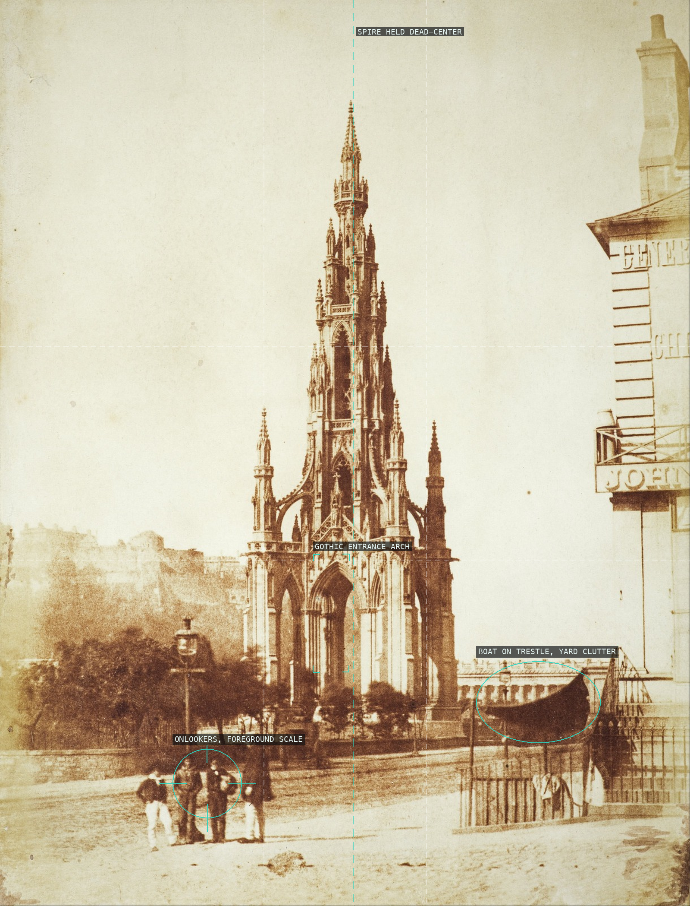

The standing woman's raised creel and the seated woman's crossed shawl close the gap between them, fusing two bodies into one triangular silhouette against the plain ground -- the compositional cell Hill repeats across the fishwife series.

The striped wrap gathers into a sculptural mass across the lower frame while the plain backdrop isolates her turned profile above it -- volume against void.

Dozens of individually lit faces are stacked into one overlapping row around the signing table -- a crowd built like a diagram, the way Hill would later assemble it in paint.

A shared document, not rank or height, organizes four sitters into one symmetrically balanced reading group.

Chalmers sits turned three-quarter to the lens in the manner of a painted moderator's portrait, his face held near the phi line while a diagonal chest strap and a scholar's hand-on-book anchor the seated pose.

A diagonal chain of heads carries the eye from the standing fisherman down into the boys huddled in the boat's shadow, the working boat standing in for a studio backdrop.

A hunched fisherman's shadowed gaze and converging coat-lines both drop toward the hands coiling line in his lap, staging labor itself as the frame's diagonal.

The monument's stone axis and entablature square off the frame while the three sitters step up the tomb's diagonal base, locking architecture and portraits into one triangulated composition.

The stone gatepost's plumb vertical edge frames Hill like a studio backdrop, while his slouched, cascading pose runs counter to it, turning architecture into an advertisement that still reads as a chance encounter.

Three heads staggered at three different heights ring an unstable triangle around a shared glass, while the outermost man's raised hand pulls him into the circle.

The spire is squared up dead-center like a specimen against blank sky, its Gothic tracery held frontal and symmetrical, while the base register is left to ordinary documentary clutter -- onlookers, a beached boat -- that grounds the monument in an unfinished, working street.